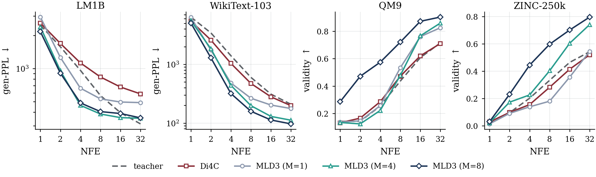
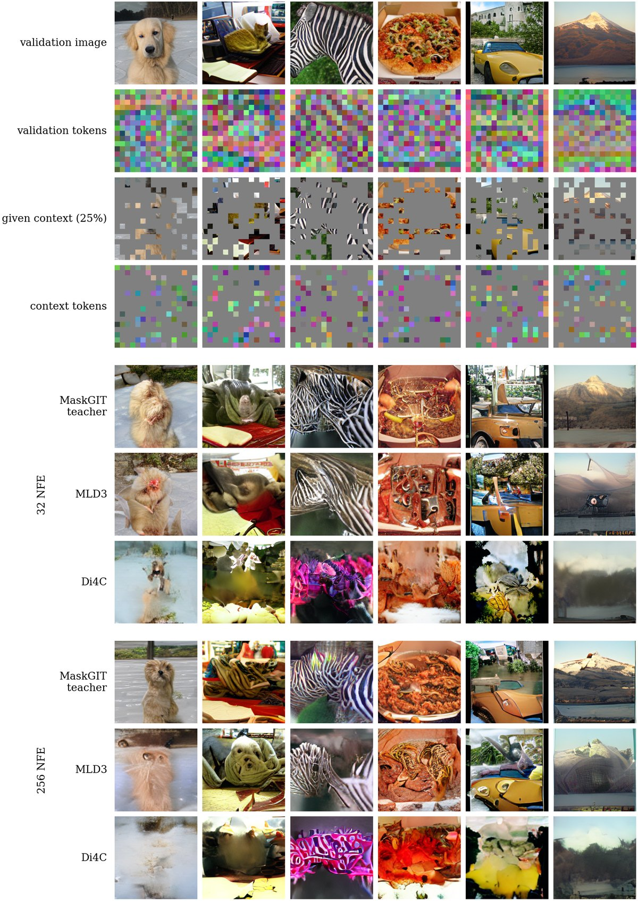

TL;DRA few-step student of a discrete diffusion teacher fills many positions in one step and draws them independently, so tokens that have to agree often do not. MLD3 replaces the single product by a small mixture of products chosen by a learned router. The likelihood of a sampled teacher transition is then a closed-form sum over components, so the student learns correlated updates directly, and one component recovers the standard masked diffusion student. Across seven datasets in text, molecules, regulatory DNA and images, MLD3 improves few-step generation by roughly 2 times over the baselines, and distilled on top of released few-step students it reaches the lowest generative perplexity among recent distillation methods on OpenWebText from 8 NFEs on.
Abstract
Discrete diffusion and flow models can generate high-quality sequences, but they usually require many denoising steps. Distilling them into few-step models is challenging because a single student step predicts many positions independently, which can lose important dependencies between tokens. We show that matching each position separately is not enough to reproduce the teacher's joint transition. Prior work addresses this issue with a shared continuous latent variable, but its training requires an approximation that can fail to make effective use of the latent. We propose Mixture-of-Latents for Discrete Diffusion Distillation (MLD3), which instead uses a small finite set of components selected by a learned router. This makes the likelihood of each sampled teacher transition exactly computable and allows the student to model correlated updates directly. We also propose a novel sampling approach that exploits the mixture components at a cost close to that of a factorized step. Notably, MLD3 naturally reduces to a standard masked diffusion student with one component and adds negligible parameter overhead as new components are added. Across text, molecules, regulatory DNA, and image generation, MLD3 consistently improves few-step generation by roughly $2\times$ over the baselines, with the largest gains on tasks with stronger dependencies across positions.
Contributions
- We analyze two limitations of few-step distillation of discrete state-space models: the irreducible dependence error of factorized student transitions, and the collapse of the convexity bound through which latent-conditioned students are anchored to their teacher.
- We propose MLD3, a finite mixture of factorized transition kernels with a learned router that enables exact marginalization over the shared latent during training.
- We introduce an efficient spread-consensus sampler that exploits the learned mixture while evaluating only a small number of components per step.
- Across seven benchmarks in text, molecules, DNA, and images, MLD3 improves few-step generation most strongly when the teacher's transitions contain cross-position dependence, and it improves released few-step students on OpenWebText and LM1B when they serve as its teacher.
One step, many positions, drawn independently
A masked diffusion model unmasks a sequence over many denoising steps. Given the state $\boldsymbol{x}_t$, a step samples each masked position from its own categorical distribution, which we call a factorized transition kernel,
This factorization is exact when a step reveals one position at a time. A few-step sampler has to reveal several positions in each step, and positions revealed together are rarely independent. For any target transition $q$ with marginals $q_i$ and any factorized kernel $p=\prod_i p_i$, the divergence splits into the total correlation of the target and a sum of per-position terms,
A student can therefore match each per-position marginal of the teacher and still miss its joint structure by $\mathrm{TC}(q)$. This error grows with the step size, which the number of steps fixes. The teacher pays it only over its many small sub-steps, whereas a few-step student has to reproduce the dependence those sub-steps build up within one step. In the toy picture above, the two positions are completed as The…brown, A…big or My…old. A product of the two marginals keeps all nine combinations, and a quarter of its samples land between the modes on pairs that no sentence of the data uses.
A small mixture, chosen by a router
MLD3 replaces the single product by a mixture of $M$ products. A router assigns the weight $w^{\theta}_k$ to component $k$ at the state $\boldsymbol{x}_t$, and each component keeps its own factorized step, obtained by applying the analytic reverse step of masked diffusion to its clean-token posterior,
To sample one step we draw a single index $k\sim w^{\theta}(\boldsymbol{x}_t,t)$ that all positions share, and then fill each masked position from component $k$. That one sequence-level draw couples the positions revealed together. Because the index is finite, the likelihood of a step is a closed-form sum. With $\ell_k(\boldsymbol{x}_s)=\sum_{i\in\mathcal{M}(\boldsymbol{x}_t)}\log P^{\theta}_{i,k}(x_s^i\mid\boldsymbol{x}_t,t)$ the log-probability that component $k$ assigns to the newly revealed tokens,
The sum over positions lies inside the sum over components, so the expression scores the probability that one shared component explains all revealed tokens jointly. It is differentiable and needs no sampling of $k$ during training. The family of kernels grows with $M$ and contains the factorized family, so a larger mixture is at least as expressive as a smaller one, and a single component reduces to an MDLM student. The network takes $(\boldsymbol{x}_t,t,k)$ as input, so one trained student runs at any number of steps without retraining.
Training. We train the student against a frozen teacher without access to the data likelihood. From a masked state $\boldsymbol{x}_t$, the teacher advances from $t$ to $s$ in $T$ analytic sub-steps, and the student minimizes the negative log-likelihood of the final sequence of this rollout under the mixture, which equals the step KL divergence to the teacher up to a constant. The weights appear inside the logarithm and receive a gradient, so a component that explains the teacher's samples better than the others raises its own weight. An auxiliary loss matches the averaged per-position posterior to the teacher's, and an entropy regularizer keeps the router from settling on one component before the components specialize.
Closed form, not a surrogate
A finite latent turns the step likelihood into a sum of $M$ terms, so the divergence to the teacher is differentiable without sampling the latent and the router receives a gradient.
One component is the baseline
At $M=1$ the objective reduces to the usual masked diffusion student, so the mixture is a strict generalization and each comparison has a matched control.
Cheap to widen
Only the last $L_{\mathrm{lat}}$ blocks run once per component, on one shared set of weights. Adding a component costs an embedding vector and one scalar router output.
Any student can be the teacher
MLD3 distills from any masked diffusion model, including a released few-step student, and a uniform-state version of the objective distills uniform-state teachers such as DUO.
Architecture and the forward pass
A single transformer trunk returns the router weights and the distributions of all components in one pass. The first $D-L_{\mathrm{lat}}=8$ blocks run once per state and produce a shared representation, from which a two-layer head on the mean-pooled hidden states produces the weights. The remaining $L_{\mathrm{lat}}=4$ blocks hold one set of weights and run once per evaluated component, where the component enters only through the learned embedding $E_k$ added to the conditioning vector.
Sampling with the mixture: spread consensus
We sample with the analytic reverse step from the all-mask sequence, and each step makes three choices.
- Spread order. The analytic step reveals each masked position independently, so the number revealed per step is random. We instead reveal the number expected under the schedule, taken in a fixed spread order, the bit-reversal permutation of the positions rotated by a random offset, so that positions revealed together lie far apart in the sequence.
- Component selection. A step evaluates only the $m$ components with the largest router weights and renormalizes the mixture over them. Components share the first stack of blocks, so a step costs $D-L_{\mathrm{lat}}+mL_{\mathrm{lat}}$ block passes, 12 for a factorized student and 16 at $m=2$.
- Consensus scoring. Each evaluated component proposes a joint continuation, and we score each proposal by the log-probability that the renormalized mixture assigns to it at all currently masked positions, $S(\boldsymbol{x}^{(j)})=\sum_{\ell\in\mathcal{M}(\boldsymbol{x}_t)}\log\sum_{k\in\mathcal{E}}\tilde{w}_k P^{\theta}_{\ell,k}(x^{(j),\ell})$. The chain advances with the highest-scoring proposal and can pick a different component at each step.
Top-1 routing, which takes the component with the highest router weight at each step, costs the same 12 block passes per step as the factorized baselines.
Why a continuous latent collapses
A shared continuous latent $\lambda$ provides the same coupling in principle, but its step likelihood integrates over $\lambda$ and is intractable. Di4C therefore anchors its student to the teacher through the convexity bound, which moves the average over the latent outside the divergence,
Written with a finite index, the bound scores each component separately, and it equals the exact objective plus a penalty, the KL divergence from the router weights to the posterior over the component given the step. The bound is thus the evidence lower bound with its variational posterior frozen at the prior, and the penalty vanishes only when the step carries no evidence about the component. We prove that the bound depends on the target only through its per-position marginals, and that each of its minimizers is factorized, with each component at the product of the marginals and a divergence of $\mathrm{TC}(q)$ to the teacher, whether the weights are fixed or trained. The exact objective instead uses the latent. With $M\ge2$ and $\mathrm{TC}(q)>0$, its minimum lies strictly below that of the bound, and its minimizers carry information in the component index. We call this failure surrogate collapse. Drawing more latent samples improves the estimate of the bound but does not move its optimum, and it is what the top row of the toy picture shows.

Few-step generation
We evaluate MLD3 on seven datasets in four domains: OpenWebText (OWT), LM1B and WikiText-103 for text, QM9 and ZINC-250k for molecules, DeepSTARR enhancers for regulatory DNA, and ImageNet-256 for images. Each student trains with $K=4$ steps, and the $M=1$ student serves as the control, since it shares the objective, the teacher and the number of training steps with the mixtures. MLD3 samples with the spread consensus over the top-2 components, and each baseline samples with its own sampler.
OpenWebText against recent few-step methods
We distill the released MDLM on OWT, with sequences of 1,024 tokens, and compare with the released checkpoints of SDTT, SDTT + Di4C, IDLM, DiDi-Instruct and the DCD students, and with the reported results of FMLM and D-MMD, which our scorer reproduces. Our $M=8$ student distilled from MDLM in a single round of 30k steps outperforms its control and Di4C at all NFEs, with 94.6 against 186 and 613 at 8 NFEs. Since any masked diffusion student can serve as the teacher for MLD3, we also distill MLD3 from IDLM and SDTT for 10k steps, starting from the student itself. The mixture then improves on both students at all NFEs by 7 to 32 percent, and MLD3 distilled from IDLM reaches the lowest generative perplexity of all models from 8 NFEs on, with 14.2 against 18.5 for IDLM at 32 NFEs. Further rounds of distillation, each of which distills the previous student under our sampler, lower it to 25.7, 16.5 and 12.8 at 8, 16 and 32 NFEs, and five further rounds on the student distilled from SDTT reach the lowest generative perplexity of all models at 4 NFEs, 62.2 against 66.1 for D-MMD. FMLM and the DCD students with a greedy last step remain ahead of all masked students only at 1 and 2 NFEs.
| gen-PPL / entropy, OWT | 4 NFEs | 8 NFEs | 16 NFEs | 32 NFEs |
|---|---|---|---|---|
| Released or reported few-step students | ||||
| SDTT (7 rounds) | 338 / 5.39 | 111 / 5.42 | 58.2 / 5.40 | 39.7 / 5.34 |
| SDTT + Di4C (2 rounds) | 252 / 5.37 | 83.3 / 5.38 | 44.1 / 5.34 | 30.8 / 5.27 |
| Di4C | 1704 / 5.94 | 613 / 5.85 | 238 / 5.75 | 131 / 5.67 |
| IDLM | 304 / 5.80 | 71.7 / 5.55 | 31.4 / 5.35 | 18.5 / 5.14 |
| DiDi-Instruct (unguided) | 488 / 5.56 | 139 / 5.46 | 66.7 / 5.41 | 46.2 / 5.38 |
| IDLM-DCD (greedy last step) | 76.5 / 5.23 | 54.6 / 5.35 | 45.2 / 5.38 | 40.6 / 5.37 |
| DUO-DCD (greedy last step) | 100 / 5.00 | 70 / 5.31 | 54 / 5.38 | 46 / 5.37 |
| FMLM† | 111 / 5.26 | 86.5 / 5.36 | 63.6 / 5.29 | 45.1 / 5.25 |
| D-MMD† | 66.1 / 5.44 | – | 67.7 / 5.57 | 72.1 / 5.57 |
| MLD3 ($M=8$) | ||||
| MLD3 from MDLM | 239 / 5.80 | 94.6 / 5.69 | 64.2 / 5.63 | 51.9 / 5.57 |
| MLD3 on SDTT | 74.4 / 5.42 | 40.2 / 5.38 | 30.8 / 5.34 | 26.9 / 5.29 |
| MLD3 on SDTT, 6 rounds | 62.2 / 5.47 | 30.7 / 5.36 | 24.1 / 5.32 | 21.4 / 5.28 |
| MLD3 on IDLM | 84.9 / 5.70 | 30.4 / 5.43 | 19.2 / 5.28 | 14.2 / 5.10 |
| MLD3 on IDLM, 3 rounds | 73.8 / 5.62 | 25.7 / 5.35 | 16.5 / 5.20 | 12.8 / 5.06 |
Generative perplexity under GPT-2 Large with the sample entropy in small type, from 1,024 samples of 1,024 tokens (held-out text has entropy 5.46). Rows marked † are reported by their papers under the same protocol. Bold and underline mark the best and second best in each column. MLD3 costs 16 block passes per step, against 12 for the baselines. The full table, with 1 and 2 NFEs, the controls and DUO, is in the paper.
Generative perplexity falls steeply as the sample entropy falls, so we also compare the models at matched entropy by sweeping the sampling temperature of each student. MLD3 lowers the generative perplexity of IDLM and SDTT at all matched entropies, by 45 and 61 percent at 8 NFEs, and the curve of MLD3 distilled from IDLM lies below all baselines at 8, 16 and 32 NFEs.

Uniform-state teachers
MLD3 also applies to uniform-state teachers, with a uniform-state version of our objective. Our $M=8$ student distilled from DUO lowers the generative perplexity of DUO by 37 to 55 percent from 2 NFEs at a similar entropy. At the entropy of held-out text, it reaches the lowest generative perplexity of all uniform-state models at 16 and 32 NFEs, ahead of DUO-DCD, IDLM-DUO and IDLM-DCD. Three rounds of MLD3 distilled from DUO-DCD outperform DUO-DCD from 4 NFEs on and score below IDLM-DCD, which distills the same teacher, at 16 and 32 NFEs, while IDLM-DCD remains ahead at 2 to 8 NFEs.
| gen-PPL at entropy 5.46, OWT | 2 NFEs | 4 NFEs | 8 NFEs | 16 NFEs | 32 NFEs |
|---|---|---|---|---|---|
| DUO | 1168 | 413 | 147 | 85.2 | 67.9 |
| DUO-DCD | 816 | 230 | 94.3 | 61.7 | 52.4 |
| IDLM-DUO | 500 | 160 | 81.3 | 60.1 | 53.4 |
| IDLM-DCD | 425 | 101 | 63.9 | 52.5 | 48.2 |
| MLD3 ($M=8$, 5 rounds) from DUO | 818 | 177 | 72.0 | 47.4 | 44.0 |
| MLD3 ($M=8$, 3 rounds) from DUO-DCD | 631 | 159 | 73.5 | 49.4 | 47.5 |
Each model is interpolated in log generative perplexity along its temperature sweep to the entropy of held-out text.
LM1B in packed blocks
Recent few-step methods evaluate LM1B on sentences packed into blocks of 128 tokens, so we also distill a publicly available MDLM in this setting. Our $M=8$ student improves on its control by 9 to 22 percent and on the teacher at all NFEs, and it achieves a lower generative perplexity than SDTT, Di4C and SDTT + Di4C distilled from the same teacher from 1 to 16 NFEs. MLD3 distilled from our SDTT student improves on SDTT + Di4C and on its $M=1$ control at all NFEs by 14 to 20 percent, and further rounds improve both MLD3 students, so that the student distilled from MDLM outperforms SDTT and SDTT + Di4C at all NFEs at a similar entropy. The continuous flow maps of FMLM and Discrete Flow Maps remain ahead only from 1 to 4 NFEs.
| gen-PPL / entropy, packed LM1B | 4 NFEs | 8 NFEs | 16 NFEs | 32 NFEs |
|---|---|---|---|---|
| MDLM (teacher) | 479 / 4.36 | 254 / 4.35 | 178 / 4.35 | 148 / 4.35 |
| Distilled baselines | ||||
| SDTT (5 rounds) | 284 / 4.30 | 155 / 4.30 | 108 / 4.30 | 90.8 / 4.30 |
| Di4C | 387 / 4.35 | 211 / 4.35 | 149 / 4.35 | 116 / 4.34 |
| SDTT + Di4C | 254 / 4.30 | 139 / 4.31 | 99.8 / 4.31 | 82.0 / 4.30 |
| FMLM† | 98.8 / 4.21 | 86.3 / 4.21 | 78.4 / 4.21 | 69.2 / 4.21 |
| Discrete Flow Maps (ESD)† | 71.5 / 4.13 | – | – | – |
| MLD3 ($M=8$) | ||||
| MLD3 from MDLM | 172 / 4.34 | 111 / 4.33 | 99.8 / 4.33 | 95.5 / 4.32 |
| MLD3 from MDLM, 8 rounds | 105 / 4.28 | 72.8 / 4.28 | 64.8 / 4.28 | 65.6 / 4.28 |
| MLD3 on SDTT | 114 / 4.31 | 78.4 / 4.30 | 69.6 / 4.29 | 67.3 / 4.29 |
| MLD3 on SDTT, 3 rounds | 107 / 4.30 | 75.4 / 4.29 | 67.6 / 4.29 | 65.9 / 4.27 |
Held-out text has entropy 4.34. Rows marked † are reported by their papers. SDTT, Di4C and SDTT + Di4C are distilled from our teacher with the authors' code, since no distilled LM1B checkpoint is public. Bold and underline mark the best and second best among the distilled models.
WikiText-103 and LM1B from random initialization
With teachers of our own on WikiText-103 and LM1B, sequences of 128 tokens and students trained from random initialization, the mixture gain grows with $M$. The $M=8$ student lowers generative perplexity from 265 to 159 at 8 NFEs on WikiText-103, a 40 percent reduction against the control, improves on the teacher at all NFEs and outperforms Di4C by a factor of 3 at 8 NFEs and 2 at 32. It also carries 0.74 nats of transition information, while the factorized control has none.

| gen-PPL, WikiText-103 | 4 NFEs | 8 NFEs | 32 NFEs |
|---|---|---|---|
| MDLM teacher | 1403 | 600 | 209 |
| Di4C | 1039 | 473 | 198 |
| MLD3 ($M=1$, control) | 481 | 265 | 177 |
| MLD3 ($M=4$) | 439 | 198 | 112 |
| MLD3 ($M=8$) | 319 | 159 | 97 |
The student rows use our sampler, and the teacher and Di4C rows use their own.
Molecules
Molecular strings couple their positions through hard chemical constraints, so that a ring that opens but does not close invalidates the whole string, which makes validity a direct measure of whether the dependence within a step is respected. On QM9 our $M=8$ student reaches 0.471 validity at 2 NFEs against 0.166 for Di4C and 0.146 for the control, and 0.903 at 32 NFEs against 0.710 and 0.825. On ZINC-250k it reaches 0.231 at 2 NFEs against 0.098 for Di4C, and 0.796 against 0.520 at 32. We also train SDTT and IDLM on our teacher with the authors' code. Our $M=8$ student has a higher validity than both from 2 NFEs on QM9 and from 2 to 4 NFEs on ZINC-250k, where SDTT leads from 8. MLD3 distilled from SDTT reaches the highest validity on both datasets from 4 NFEs on, up to 0.946 and 0.955 at 32 NFEs, but like SDTT itself it repeats molecules from 2 to 8 NFEs, a loss that its $M=1$ control shares and that therefore comes from the SDTT teacher rather than from the mixture.
| validity | QM9 | ZINC-250k | ||||||
|---|---|---|---|---|---|---|---|---|
| 2 | 4 | 8 | 32 | 2 | 4 | 8 | 32 | |
| MDLM teacher | 0.148 | 0.271 | 0.450 | 0.713 | 0.091 | 0.201 | 0.345 | 0.550 |
| Di4C | 0.166 | 0.286 | 0.471 | 0.710 | 0.098 | 0.155 | 0.282 | 0.520 |
| SDTT (7 rounds) | 0.124 | 0.382 | 0.616 | 0.830 | 0.124 | 0.387 | 0.603 | 0.857 |
| IDLM | 0.273 | 0.306 | 0.422 | 0.669 | 0.120 | 0.260 | 0.462 | 0.755 |
| MLD3 ($M=1$, control) | 0.146 | 0.257 | 0.533 | 0.825 | 0.091 | 0.139 | 0.180 | 0.545 |
| MLD3 ($M=8$) | 0.471 | 0.574 | 0.720 | 0.903 | 0.231 | 0.444 | 0.597 | 0.796 |
| MLD3 ($M=8$) on SDTT | 0.449 | 0.457 | 0.800 | 0.946 | 0.217 | 0.620 | 0.854 | 0.955 |
Fraction of valid molecules out of 4,096 samples at each number of NFEs, averaged over trials of 1,024 as in PairFlow. The teacher row uses MDLM's own sampler. Bold and underline mark the best and second best among the distilled models. Uniqueness, novelty, top-1 routing and the students distilled from IDLM are in the paper.
Regulatory DNA and images
The ordering follows the dependence in the task rather than the modality. On DeepSTARR, where the steps carry almost no dependence between positions, the $M=4$ mixture improves the Fréchet biological distance over its control at all NFEs, by 21 percent at 16 NFEs and 15 percent at 32, a smaller gain that the teacher-side test above predicts in advance. On ImageNet-256, where the students distill a MaskGIT teacher, the $M=8$ student improves FID over Di4C at all NFEs, and the $M=4$ student reaches the lowest FID of any student at 32 NFEs, 96.9 against 112.0 for the control and 117.5 for Di4C. The improvement comes from coverage, as the recall of the $M=8$ student reaches 0.338 at 32 NFEs against 0.266 for the control and 0.201 for Di4C.

What the components learn
Di4C uses a continuous latent and has no learnable router, so we train the same MLD3 trunk with the Di4C objective, on the same teacher, for the same number of steps and with the same number of components. Under our objective, the components of a trained student lie 0.43 to 0.68 nats apart in pairwise KL divergence, and a single step carries 1.2 to 11.2 nats of dependence between positions. Under the Di4C objective the components coincide to within 0.002 nats, a step carries at most 0.004 nats of dependence, and the router stays at its uniform prior, since the objective sends it no gradient.
| dataset, objective | $\exp \mathrm{H}(w)$ | pairwise KL | KL to the mixture | TC per step |
|---|---|---|---|---|
| QM9, MLD3 | 7.65 | 0.533 | 0.174 | 1.234 |
| QM9, Di4C objective | 8.00 | 0.000 | 0.000 | 0.001 |
| ZINC-250k, MLD3 | 7.13 | 0.435 | 0.160 | 2.282 |
| ZINC-250k, Di4C objective | 8.00 | 0.002 | 0.001 | 0.004 |
| DeepSTARR, MLD3 | 4.30 | 0.681 | 0.242 | 11.208 |
| DeepSTARR, Di4C objective | 8.00 | 0.000 | 0.000 | 0.000 |
Divergences in nats between the components of a trained $M=8$ student with half of the positions masked. A collapsed mixture has 0 in the last three columns, and $\exp \mathrm{H}(w)$ is 8 for a uniform router and 1 for a router that uses one component.

The components specialize to modes of the data. When we pin the router of the QM9 student to a single component and decode 1,024 molecules per component, the aromatic fraction runs from 0.008 to 0.572 across the eight components, against 0.156 for the mixture, and the ring count runs from 0.85 to 3.13 against 1.26, while the same test on the Di4C student moves the aromatic fraction over a range 6.7 times smaller. Aromaticity, ring count, heavy-atom count and sulfur content shift together, so a component selects a mode rather than a single attribute, the behaviour the toy picture shows. The trained Di4C student on DeepSTARR also ignores its latent, since sweeping the latent at the all-mask state moves its prediction by less than $10^{-8}$ nats in KL, against 0.88 nats when a single token of the state changes.
Samples
We show samples of the best MLD3 student on OpenWebText, distilled on IDLM-MDLM in 3 rounds, next to samples of IDLM-MDLM itself at the same number of NFEs. Both come from the evaluations behind the OWT table, and for each model and NFE we show the sample whose gen-PPL is the median of its 1,024, so the pairs are representative rather than picked. A token is shown in red when GPT-2 Large finds it more surprising than nine in ten tokens of held-out OWT text.
OpenWebText, 1,024 tokens
show the other 854 tokens
supports ID networking was starting to cancel department stores leavingoff IDAB and ID2 were told they still are raktos? ㅋㅋ People form planning to buy a console for their in-game machine. But, if you, it's much more likely to buy a PC! Handel papercraft has a tempting offer; you're not allowed to reject it. More than limited to RPG fans, many to prominent people of traditional RPGs (a list that includes includes The23, fanboy, Nurkakari and sick6ossart about my losses), +9.5% Jewish, +7.9% Muslim, more better said than +5. Lawrence Samnig explained and said about overwhelmed at the points, more harm said than done. 1st Design as well as game flow make things useless.[ the24 - He honour Sinšš information and has given list about the information he should be most likely to understand. more list performed by The27] Tuebrot's successor Is Is 97% Mik Gary Neumann's successor Is Leofeldt.[ the23Nov 26, 2011 5 Points 2 69 of 14 ¶ Link to Post ¶ Link to this Post ¶ Posted to ¶ w45end, zrf nthebiker the world’s most representative organisation. is in a position with a huge respect of the woman who would be booted from Harvard if she wasn’t taking a computer course. Hell no no! thethelor none the less calls puck-tricksters anyone who likes a cross section of pixels. we'd perfectly happy at desks in the American Capitol, spent weeks trying to shove a controversial amendment at the the Rogers Centre, spent nights on the street watching the Bulls and the NFL and spent s war with politicians ever to come from what were to be some unfortunate, crafty souls that had claimed for years that Capitol Hill (that's where36 at Vermont) was fair game. Majim Noah was a lamb only and the monksonite nuns spent their parents in Divine Mercy. The L’ristotle judgment was the same animal with whom Angelo Fedrogioal cared passionately his holy land 58 years now. we been extremely lucky not to have been feeling the wrath that judicial reform was was preposterous, but we had found right the wrong the ignorable perfect sport, which is why we all like here. Shifting the decks compounds the misery that u-ule expanded to heart and OneWedgeEarth /us US is so unlike any other. We've had Cousin Francois and Montbagou and votcayle, andNeil deGrasse Tyson and smlabash, reestablished abortion rights by stopping how gun control has happened pointless and fewer than 300 Americans ever earned Civil War permission to play Normandy yet there we are right to believe Donald Trump is the only person to play Lodge-sided. ★ collateral damage ★ It's safe to say polls shown up about 42% of the archdiocese Zakaria’s office within 37 km radius of Baltimore? Could the person who killed the ACA before Sept. 30 turn allowed to takekarma a and claim traditional medicine is dead wrong? national security isn't difficult to justify. person who accused Bush of Iraqan Iraq borders on being self-selected by whatever they want. This and the Bush of homeopaths certainly aren't claim- be by eurosbarian pawns. Express 01 with theSeller a. Far too concerned the ramifications for the depletion of the Atlantic and a Miles Teller wind farm soaring to heaven if there'd be UN debate on civil weapons, the deployment of protectionism or a serious Sir John Hootenay wresting over apprehend nuclear terrorists. Anyone can software made, smartphones and 2kcd a, can be made define what theSeller cares is. What we need isn't't downloaded made available from Bel Air the Bar or from the roof of the Pacific. If food stamp inflation, could collapse%, is what still is really happening to the US?! The free traders of Wall Street are all anathes likeixir. I knows it’t deserve to be tarred by the Republicans for how down they are on both counts,. know only one thing: All economistsshow the other 862 tokens
is certainly some justification for these assumptions. Per Zeiler in a release from the Times economics blog he says: “We're already the most lever-wealth society amongst the wider world. The exclusive upper class salaries of U.S. employees, glow-in-the-blue moustache and the Pitchfork.tv crew don't warrant an extra $100,000 just to mass-produce. It's better than both the US G4 trillion and the EU Level Zero (e.g., roughly 80 IQ than the French right now." ¶ ✨ Berlin ¶ This is a brutally harsh year for the U.S. WW2 and Japans Super Bowls; Loading) ¶ With 2014 as perfect reason to celebrate a year of the woeful euro, Berlin has the perfect opportunity for musicians, activists and politicians alike. ¶ Sitting over the local police and post-conviction courts there is a city-wide membership of at least 45 different Criminal Defense Associations — including: ¶ CRASH! Every gathers together to join forces. Club members can be drawn from every quarter of humanity. “Speaking out against injustice” means defending your human rights. Anyone who is convicted to receive a seven-year jail sentence” - but not by the stretch of the imagination. It's a 75/1 ratio for holding members from running out of time. ¶ Once a boy from Berkeley was taught early life: “Learned by persuading your fellow man to have a common goal, excluding those who are of foreign origin will be persecuted by government - which is “Know ahead of time and your liberty will be cut short.” ¶ ✨❤️DARON: US rapper DaRae Johnson enjoys 65 percent conversion rate. ¶ Free cell phones are free time: Back in 2010, average Americans were waiting for 13,666. That’s okay. ¶ 50 percent of cell phones are free time: Many British peasants, in the era of Abraham Lincoln, were constantly waiting for Lincoln radios and others to be used on their estates. That number for DaRa is a reasonable estimate? Hell, 50 percent. ¶ Put this further in context: while the vast majority (84 percent) favored Marco Rubio of Florida, it became one-hanging fruit for House Majority Leader Mitch McConnell in the Senate by approximately 25/29 margin — ¶ Related Stories on Facebook • ¶ Size, size, strength and dignity in US | pinterest ¶ ANIMAP ¶ Where you live in the United States and where I live in doesn’t mean there’re all in equal footing – I'm pretty sure everyone gets the same amount or quality of computational resources compared to I’m in and which is better (I limit the amount of time I look up and look at things and be worried about choking my school before moving on, and there there’s no overarching, overriding theme, the sites are fast and furious. We have a lot of traffic, so the average of those sites is five times higher. ¶ In addition, no local media outlets with any resources to negotiate with Barack Obama have confirmed their existence – and this is a fascinating development: Not only do the “waivers of the world use XM tapes and the Israeli army” aren’t the whole reason for Elon Musk in the game (i.e. the Assad regime) – which means Elon Musk also fits some type of sniper in the game. ¶ Way to go, friends. ¶ Your favorite position you enjoy playing? https://t. ¶ 1. NFL Draft; Loading) ¶ Wide receiver: I love the receiver. I love the receiver. I love to see a receiver with good cleats. I love Adidas sneakers – awesome. ¶ As the polls show, the northernmost state in the union will go back into Dax Lewis’ jurisdiction. Remember my defense? I wore the X-factor through the horrors of gas chambers. Suddenly, I did something out of place, and suddenly something far more elaborate! ¶ ~Story(s) ¶ Malecée: We made the trip to GalEach card shows the first 160 of 1,024 tokens of one sample, and the toggle shows the rest. A pilcrow marks a line break.
Molecules and images


BibTeX
@article{ahmed2026mld3,
title = {Mixture-of-Latents for Few-Step Discrete Diffusion Distillation},
author = {Ahmed, Mansoor and Tang, Sophia and Venkateswara, Hemanth and Patterson, Murray},
year = {2026},
note = {Preprint}
}